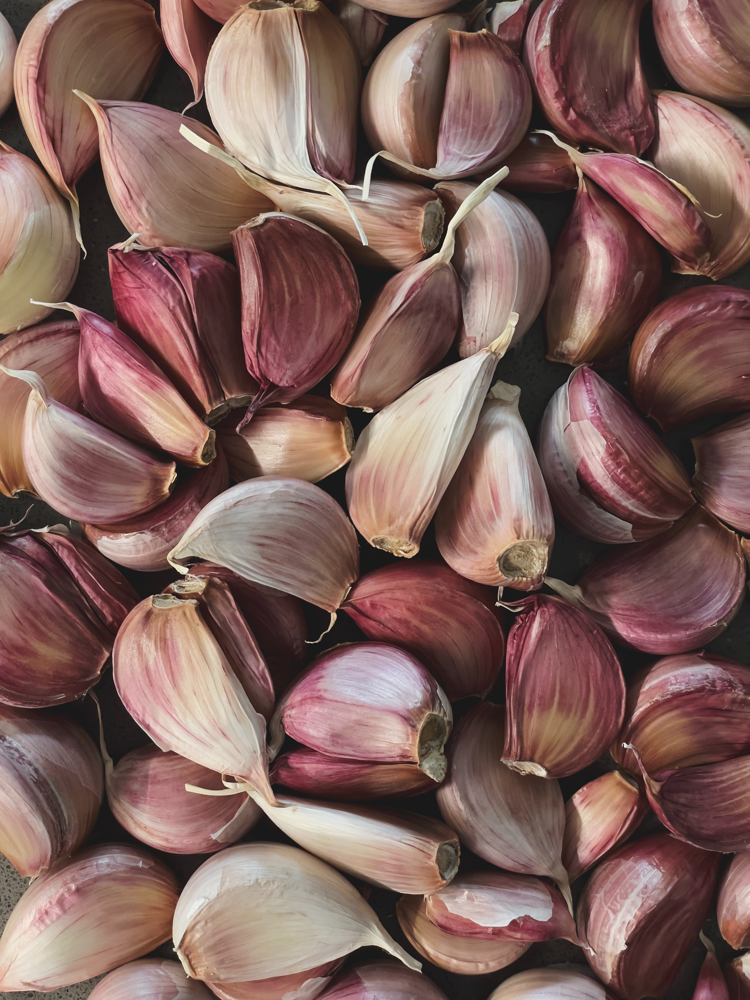

About Garlic
Garlic is a versatile and flavorful herb that is widely used in various culinary dishes. Known for its distinctive aroma and taste, garlic adds depth to savory recipes. Growing garlic at home allows you to enjoy fresh and potent cloves for cooking and provides numerous health benefits.
Steps to Grow Garlic
- Choose a sunny location with well-drained soil for planting garlic.
- Break apart garlic bulbs into individual cloves, selecting the largest and healthiest cloves for planting.
- Plant garlic cloves with the pointed end facing up, about 2 inches deep and 4-6 inches apart.
- Water garlic regularly, especially during dry periods, to keep the soil consistently moist.
- Apply a layer of mulch around the garlic plants to suppress weeds and retain soil moisture.
- Harvest garlic when the tops begin to yellow and fall over. Allow the bulbs to dry before storing.
Extra Information
Garlic is not only a culinary delight but also known for its potential health benefits. It contains allicin, a compound with antibacterial and antifungal properties. Additionally, garlic is believed to have cardiovascular benefits and may help lower cholesterol levels. Incorporate fresh garlic into your cooking and enjoy the flavors and health benefits it provides.